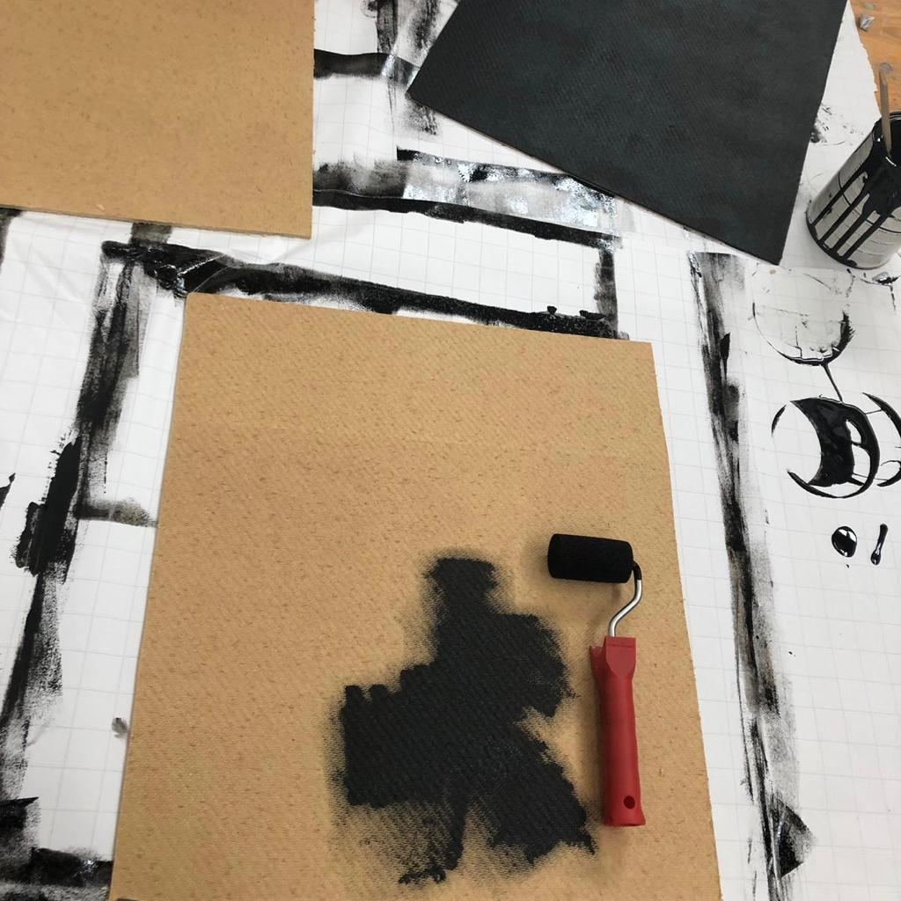
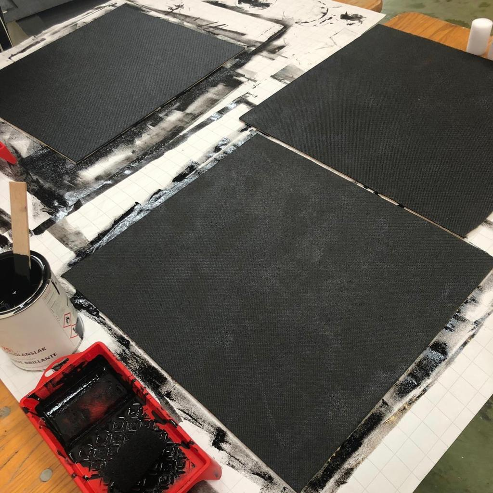
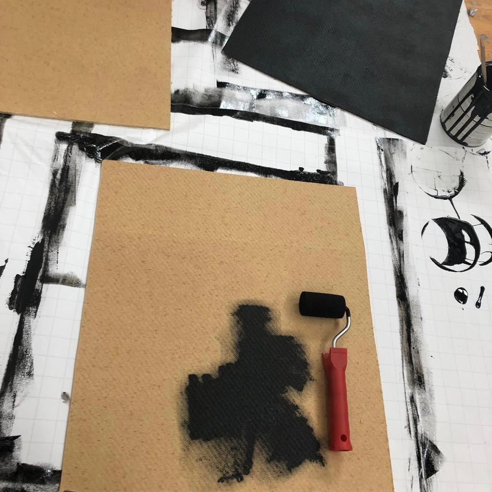
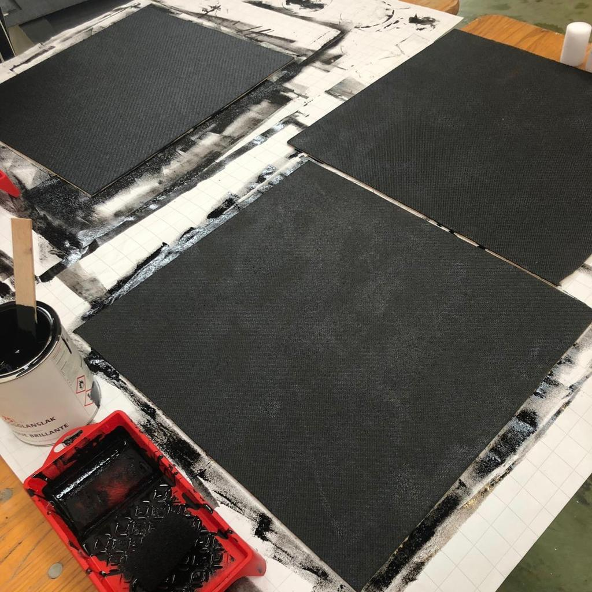

Product
Dag 1 | maandag 3 juni’19
De eerste dag was een opstart dag. De dag begon met een kick-off waarin kort werd uitgelegd wat we van deze weken konden verwachten. Na de kick-off konden we de lijsten zien met de groepen en topics waarin we waren ingedeeld. Ik was ingedeeld in augmented & virtual reality. Dit was mijn tweede keus maar eigenlijk was ik hier heel blij mee en wilde ik deze meer dan mijn eerste keus. Toen we eenmaal zaten in de groepjes was het in het begin elkaar voorstellen en elkaar leren kennen, zodat we wisten wat ieder zn skill was en om de twee weken leuk te laten verlopen. Hierna zijn we begonnen met het maken van een scrum board. Hier hadden we nog niet veel opgedaan omdat we niet zo goed wisten welke kant we op moesten gaan. We konden natuurlijk VR gaan doen maar ook AR. Omdat iedereen weinig wist van de topics zijn we begonnen met het doen van research. Iedereen ging een beetje uitzoeken wat de topics inhielden en hierna hebben we mindmap gemaakt om een beetje op ideeen te komen. Er kwamen een paar leuke ideeen uit maar veel waren onrealistisch en heel erg lastig. Uiteindelijk zijn we door de mindmap en door de inventarisatie op een concept gekomen met nerf guns. Persoonlijk leek het mij het leukste om met VR te gaan werken, maar uiteindelijk is er toch met overleg de keuze gemaakt om te gaan voor een concept die voornamelijk AR bevat. Eenmaal toen dit duidelijk was ben ik bezig geweest met het verdiepen in de opties die mogelijk zijn voor AR, Tot slot heb ik met Lars uit mijn groep de marker gemaakt voor het target zodat die geprint kon worden en de volgende dag gebruikt kon worden.
Dag 2 | dinsdag 4 juni’19
De dag begon met een gast spreker, zijn naam heb ik helaas niet opgevangen. Maar hij vertelde over dat hij werkte voor de efteling en andere bedrijven en dat hij bewegende beelde maakte waarbij hij ook gebruik maakte van licht en donker. Ik vond dit heel interessant, ik kende het nog helemaal niet. In het begin had ik niet veel zin in deze dag. Ik wist niet zo goed wat ik ervan verwachte en ik was een beetje zenuwachtig. Na de overleg met de groep heb ik de taak gekregen om uit te zoeken hoe het werkt om een marker te maken voor augmented reality. Ik heb eerst heel lang research gedaan naar wat er allemaal mogelijk is en met welke programma’s er het beste gewerkt kunnen worden. Uit eindelijk kwam ik uit op het programma unity. Ik ben eerst bezig geweest met het uitvogelen hoe unity zelf werkt voor ik er een project in wilde maken. Toen ik dit had gedaan had ik een handleiding opgezocht die mij uitlegde hoe ik een marker kon maken en hoe de marker gekoppelt kon worden aan het 3d object. Het ging allemaal niet vlekkeloos. Ik ben er bijna heel de dag mee bezig geweest. Ik las de handleiding goed maar ze vertelde niet alles stap voor stap. Zo heb ik de software van unity een paar keer opnieuw moeten downloaden om voor elkaar te kunnen krijgen dat de AR op meerdere telefoons werkt. Ook kwam er een ander programma bij vuvoria, wat er ook niet duidelijk bij stond. Ik heb heel lang moeten zoeken naar hoe ik die programma’s kon koppelen en naar hoe ik uiteindelijk een gratis account kon maken. Toen dat eenmaal was gelukt kon ik beginnen met het plaatsen van de marger in unity en daarna de 3d object erbij te zetten. Dit ging vrij snel en was niet zo moeilijk alleen toen ik hem daarna wilde builden en runnen om hem te kunnen afspelen op een telefoon stond er dat ik weer iets nieuws moest downloaden om het bestand te kunnen maken. Die download deed het niet waardoor ik verder moest gaan met lars op zijn computer. Dat was uiteindelijk gelukt en hieronder is het voorbeeld.
Dag 3 | woensdag 5 juni’19
Deze dag begon met een gast spreker. Dit was Joost Broekens en die ging het hebben over Sociale Robots, hoe Robots denken en voelen. Hij liet voorbeelden zien van allemaal filmpjes en films waarin robots werden gebruikt. Ik vond dit erg leuk om te zien, maar veel filmpjes en films had ik al gezien waardoor mijn aandacht niet goed bij bleef. Hierna zijn we bezig geweest met het scrumboard en hebben we rollen verdeeld. Het was mijn taak om uit te zoeken hoe je 3d modellen kon maken. Ik heb eerst geprobeerd om een model te maken via sketchupp, alleen kwam ik erachter dat dit programma niet heel gedetailleerde dingen kon maken. Ook was het programma onhandig en niet geschikt voor ons project. Ik ben toch maar opzoek gegaan naar een ander programma die voor mij beter zou gaan werken. Het was moelijk om erachter te komen welk programma goed samen zou gaan met unity, welke gratis was en ook nog eens beschikbaar is voor mac. Dit was moeilijk te vinden dus toen had ik van Tim de tip gekregen om te gaan werken met 4d cinema. Hiervoor moesten we wachten op een licensie dus ben ik er nog niet mee bezig geweest. Wel heb ik nog geholpen met het prototype van de nerfgun met de telefoon en augmented reality erbij. We hadden via een standaart de telefoon vast gemaakt aan het nerfgun en toen de marker gescant en ik was al best te vreden.
Dag 4 | donderdag 6 juni’19
De ochtend begon met een gast spreker, dit was Teun Verkerk. Teun had het over zijn werkveld en met welke projecten hij bezig was. Hij had het vooral over de artificial creatures die hij had gemaakt. Dit waren witte platen die in elkaar gezet konden worden en daardoor een geheel werden. Die creatures konden verschillende soorten geluiden maken en werden in een paar plaatsten in europa in het openbaar geplaatst om te kijken hoe mensen hier op zouden reageren. Ik vond dit opzich wel een leuk hoorcollege doordat hij afentoe wel een grapje maakte en zo mijn aandacht erbij hield alleen vond ik het jammer dat dit al de tweede gast spreker was die het enkel over artificial creatures had terwijl dat niet relevant was voor mijn project. Na de gast college moesten we voor onszelf een promise maken. Onze promis werd: ‘We promise you to make you a ghostbuster’. Dit werd onze promise omdat we hadden besloten dat de wezens die in ons project neergeschoten moisten worden spoken werden dus hadden we gelijk het thema van Ghostbusters eraan gekoppelt. Deze dag was mijn taak om uit te zoeken hoe ik 3d objecten kon animeren. Hier ben ik lang mee bezig geweest en het is me niet volledig gelukt. Waar ik namelijk achter kwam is dat als ik een object wou laten bewegen via unity dat ik gebruik moest maken van C# en dat ken ik niet. Ik heb me er een klein beetje in verdiept vandaag maar het ging moeizaam. Daarom ben ik daarna toen het bluetooth apparaatje binnen kwam met lars daarmee aan de slag gegaan. Lars had eerst gekeken naar een voorbeeld hoe we de arduino konden koppelen aan de telefoon en daarna heb ik hem geholpen met het koppelen en dit werkte uiteindelijk. De telefoon kon namelijk het lampje op de arduino uit en aan zetten door enkel een a of een b op de telefoon in te voeren. Alleen was dit niet hoe we de koppeling in ons project willen gebruiken want wij hebben het andersom nodig, de arduino moet een bericht sturen naar de telefoon. Dus hebben we een knop op de arduino gezet, wanneer er op die knop werd gedrukt moest hij een sein geven aan de telefoon en dit was uiteindelijk gelukt. Voorderest heb ik die dag niet veel kunnen doen omdat we vooral veel bezig waren met het researchen. Doordat de we de bluetooth werkend hadden gekregen kwamen we voor mijn gevoel steeds dichterbij het einddoel. Voor mijn gevoel zijn we al heel erg ver gekomen in 4 dagen.
Dag 5 | vrijdag 7 juni’19
De dag ben ik begonnen met het renoveren van het scrumboard. Het board werd rommelig en overzichtelijk en ik vind het fijn als er duidelijk staat wat er moet gebeuren. Door dit board te renoveren kwamen we erachter dat we eigenlijk al heel ver waren en dat er enkel nog wat kleine dingen moeten gebeuren voor we het decor konden maken. Ik ben daarom verder gegaan met het uitvinden hoe ik een 3d object in unity kan animeren. Dit is mij gisteren niet gelukt maar dit kwam omdat ik er veel te moeilijk overdacht. Ik had een turtorial gevonden die mij heel goed uitlegte hoe ik iest kon animeren. Zo kwam ik er dus ook achter dat ik simpele bewegingen kon doen met een object zonder gebruik te maken van C#. Toen het mij gelukt was om een object te animeren ben ik oskars gaan helpen met het maken van een demo. We zijn opzoek gegaan naar een stuk karton en zo hebben we samen een mini decor gemaakt om te kijken hoe we ervoor konden zorgen dat de sensor een groter raak vlak kreeg. Want eerst moest je de sensor echt in het midden raken zodat de arduino een aanraking noteerde. Maar door een elastiekjes systeem konden we ervoor zorgen dat de trilling van het raakvlak altijd door stilt naar de sensor.
Dag 6 | dinsdag 11 juni’19
Dit is de dag dat we begonnen met het maken van het decor. We hadden net te horen gekregen dat Oskar door persoonlijke omstandigheden moest stoppen met HCI. Dit was jammer omdat we nog best wel veel te doen hadden en dit nu nog maar konden verdelen onder drie personen. We hebben daarom een plan van aanpak gemaakt en gekeken hoe we het meest effectief te werk konden gaan. Hierbij kwam het scumboard goed van pas. Ik ben begonnen met het ontwerpen van het decor, ik heb een wat ideeen opgedaan en ben dit gaan uittekenen. Alleen hadden we de spullen er nog niet voor dus konden we niet bouwen. Ik kreeg het idee om de nerfgun die we wilde gaan gebruiken op te pimpen dus die ben ik gaan schilderen. Dit heb ik niet op een hele handige manier gedaan want ik ben de nerfgun met zwarte verf gaan beschilderen alleen omdat de gun van plastic was pakte de verf helemaal niet. Halverwege het schilderen kwam er iemand naar me toe die me vertelde dat het beter was om hem eerst te schuren en daarna te besprayen met verf. Omdat ik al halver wegen was ben ik door gegaan op mijn manier. Dit was niet heel slim want ik ben er bijna heel de dag mee bezig geweest om de gun zwart te krijgen. Daarnaast heb ik met lars de eerste spullen van het decor gehaald.
Dag 7 | woensdag 12 juni’19
Vandaag ben ik naar de winkel geweest om de verf spullen te halen voor het decor. We zijn vandaag echt begonnen met het bouwen van het decor. Als eerste ben ik de platen gaan aftekenen. We moesten namelijk vierkantjes halen uit de platen waar we de markers van konden maken. Toen alle platen waren afgetekent heeft lars de platen uitgezaagd waardoor ik vervolgend de markers weer kon opmeten en uittekenen omdat er overal nog een centimeter afmoest zodat ze in het frame pasten met de elastieken. Hierna heb ik opgemeten waar alle gaten voor de elastieken moesten komen en die heb ik vervolgens gemarkeerd zodat lars ze door kon boren. Toen alles goed was konden alle platen zwart geschilderd worden, toen ik hier mee bezig was kwam ik erachter dat de planken eigenlijk eerst nog met grond verf ingesmeerd moesten worden omdat de verf helemaal in de platen gezogen werd. Uiteindelijk toen de verf opgedroogd was kwam het houdt een beetje door de verf heen wat wel een leuk effect gaf dus besloten we het gewoon zo te laten.
< 



Dag 8 | donderdag 13 juni’19
Vandaag zijn we begonnen met het schilderen van de markers. Het was eerst het plan om er schilderijen van te maken met een achtergrond die past bij de markers en om er dan een lijstje om heen te maken. Maar wegens tijdsgebrek moesten we helaas de markers versimpelen. Nadat de markers droog waren konden we beginnen met het decor in elkaar zetten. Lars had het frame in elkaar gezet en toen kon ik verder de punaises erin doen en de markers met de elastieken vast maken aan het bord. Uiteindelijk zagen de markers er op deze manier juist leuk uit omdat ze mooi pasten bij de elastieken en het vervaagde zwart. Hierna moesten we alleen nog de sensoren achter de markers plakken en alles vast tapen zodat alles op dezelfde plek zou blijven.
<Dag 9 | vrijdag 14 juni’19
De dag van de Expo
Vandaag was het zover, de echte voorbereidingen voor de expositie. We hoefden niet meer zo veel te doen vandaag alleen nog wat kleine dingen om hem af te maken. Het was uiteindelijk niet meer gelukt om een score te verwerken in unity en het was ook moeilijk om een score systeem te maken waarbij we kunnen aangeven of de gebruiker gewonnen of verloren heeft omdat de nerf pijltjes moeilijk te koppelen zijn aan een systeem. Hierop heb ik op verzonnen om het puntensysteem niet digitaal te maken maar door het zelf op te schrijven. We zijn naar de winkel gegaan en daar vonden we schoolbord krijt verf en krijtjes. Toen heb ik een vlak op het bord geverfd alleen was het hout er niet helemaal geschikt voor dus moest daar een oplossing voor komen. Ergens was nog een klein stuk hout over, die heb ik geschilderd en daar pakte de verf wel goed. Uiteindelijk is het bord op het decor geboord. Hierna heb ik rondgelopen en geholpen bij andere groepjes. Om 4 uur kwamen de eerste mensen binnen en begon de expo. Wat ik niet had verwacht is dat ons product erg goed aansloeg. Het was de hele tijd erg druk en iedereen wilde het proberen. Wat ook opviel was dat het score boord het spel leuker maakte omdat mensen in de top drie wilde komen. Vooral kinderen wilde het vaker proberen zodat ze uiteindelijk in de top 3 komen.
Labweeks | product
Wij hebben een AR Game gemaakt die gekoppeld was een aan nerf gun. Het Decor bestaat uit een grote schietschijf met 5 markers. Met twee meter daarvandaan richt je met een nerf gun op dat bord. Op de nerf gun is een telefoon aangebracht, door die telefoon heen kan je op de doelen schieten die via augmented reality op de markers worden geprojecteerd. Op de markers zijn 5 verschillende monsters geprojecteerd, wanneer een monster beschoten wordt is hij voor 10 seconde uitgeschakeld en dus ook 10 seconde niet in beeld, tegelijkertijd verschijnt er een punt op de telefoon scherm. De persoon krijgt 20 pijltjes omdat er max 20 pijltjes in het magazijn past. Wanneer alle pijltjes op zijn wordt er gekeken naar hoeveel punten er bepaald zijn en of je in de top 3 van de highscores komt.
We hebben dit voor elkaar gekregen door touch sensors(piezo sensors) aan de achterkant van de platen vast te maken. De sensors zijn heel gevoelig waardoor we de platen moesten afzonderen van het geheel, dit hebben we gedaan met een elastiekjes systeem. De sensors zitten vast aan een arduino uno board en zijn daarmee gekoppeld aan een C# code gebouwd in unity. In deze code wordt er aangegeven wat er met de monsters gebeurt als de sensor aangeraakt wordt en dat de gebruiker een punt krijgt. Dit is weer te zien op de telefoon door middel van een app van unity genaamd vuvoria.
Labweeks: Reflect
De labweeks waren voor mij in het begin heel erg wennen. Ik hoorde er van te voren veel over en was best zenuwachtig. We begonnen met 4 personen, omdat de eerste dag al iemand was afgevallen. Ik werd toegewezen aan AR en VR en er kwmanen veel ideeen naar boven alleen daar kwamen al de eerste oneenig heden in de groep. De groep klampte zich namelijk aan een haak in de zaal waardoor veel ideeen niet realistisch werden en zonder doel. Toen kregen we de tip om ons niet gelijk vast te klampen aan een idee maar ook eerst te kijken wat er mogelijk is. Toen we eenmaal bezig waren met het verdiepen in AR en VR begon alles eindelijk op gang te komen. En hebben we uiteindelijk een heel mooi eindproduct kunnen ontwerpen. Dit project hebben we uitgevoerd met drie personen in plaats van vijf, dit was best wel zwaar. Ik merkte tijdens de twee weken dat daarom ook echt alles uit de dag moesten halen. Ik vind dat ik daarom in verhouding tot de rest goed mijn best heb gedaan. Ik heb met ieder onderdeel van het project geholpen. Ik heb mee gewerkt aan het werkend maken van de sensors, ik heb gewerkt aan het maken van de mosters in unity en ik heb onderzocht naar hoe alles geanimeerd kon worden. Uiteindelijk ben ik in de tweede week ook veel bezig geweest met het decor. Ik denk dat in onze groep juist omdat we met weinig waren daarom iedereen hard heeft gewerkt en even hard zijn best heeft gedaan. Ik ben ook heel erg tevreden met het product die we geleverd hebben omdat ik weet hoeveel moeite we erin hebben gestopt. We kregen alles namelijk pas een dag voor de expo werkend en inconnectie met elkaar wat best wel stressend was. Toen de expositie aanbrak zag ik pas hoe leuk ons project was. Er stonden de hele tijd mensen bij, iedereen wilde het proberen en door het score boord wilde veel mensen het ook meer dan een keer doen. Ik heb tijdens de HCI weken heel veel geleerd en uiteindelijk ook heel erg genoten. Ik heb hier geleerd om met nieuwe programma's te werken zoals bijvoorbeeld arduino en C#. Ik heb ook heel erg genoten van de HCI weken omdat je veel nieuwe mensen leert kennen, je leerd op een hele andere manier op een andere locatie waardoor het lijkt of je twee weken geen school heb maar een soort excursie.